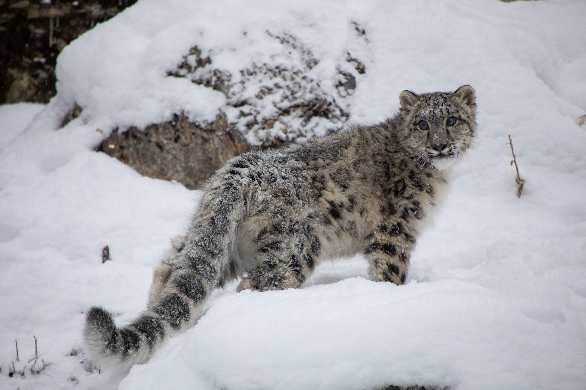
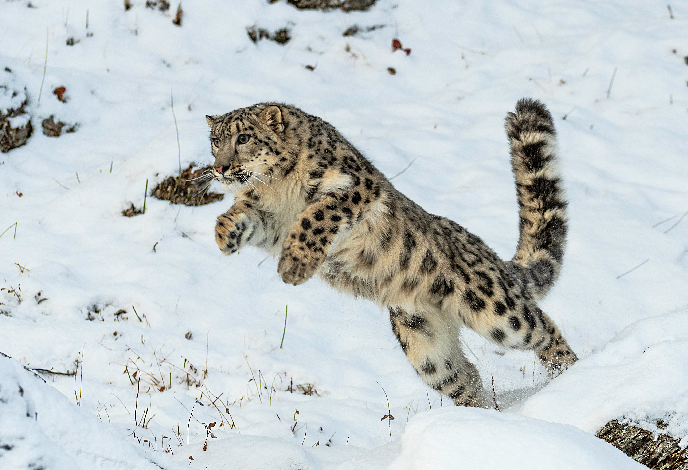

Explore breathtaking images of snow leopards in their natural habitats.
A closeup of a Snow Leopard surrounded by their favorite weather, the snow!A Snow Leopard runs along a Himalayan Mountain ridge.Snow leopard pups lounging upon a rock.

A Snow Leopard looks back at the camera during a short stop on it's hike throught the mountains.A Snow Leopard lounges on a rocky outcropping, looking down on its domain

A Snow Leopard leaps into action, intensel focused on its prey.